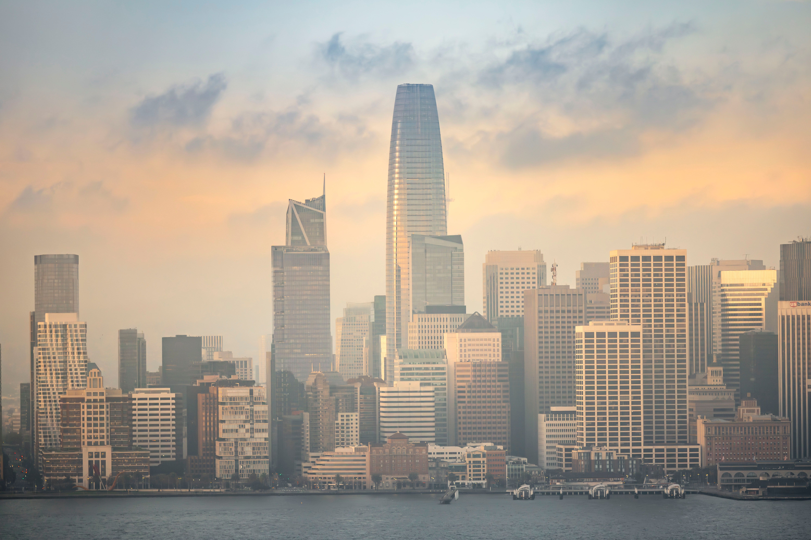
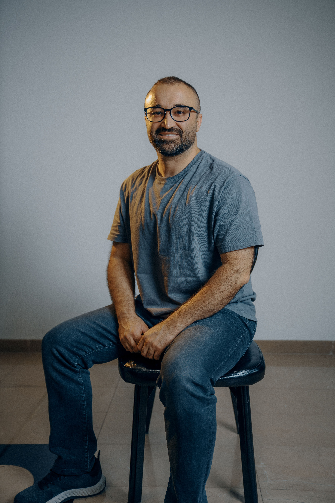
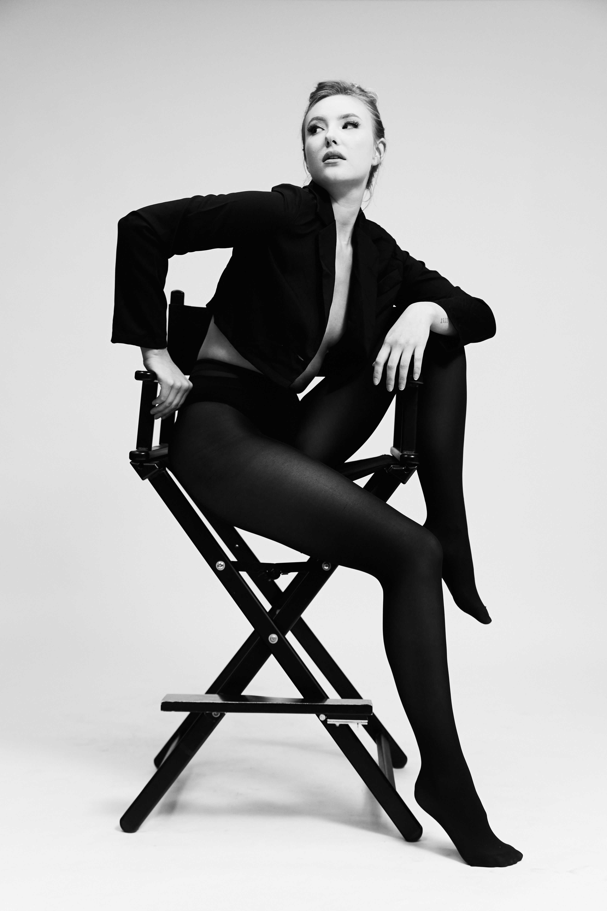
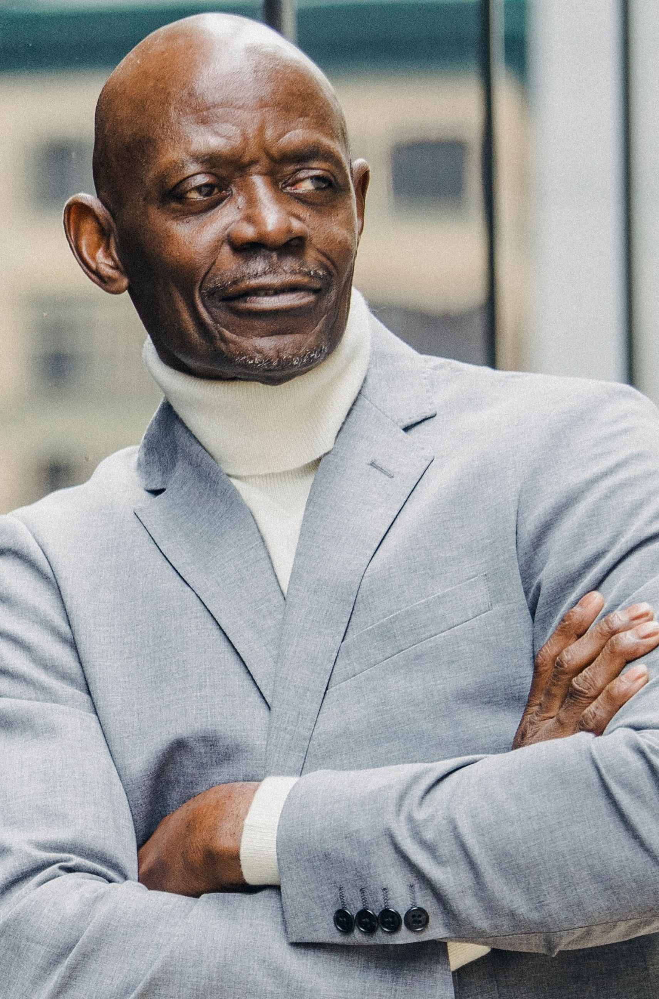

The JeniDub Event Center is a premier venue for hosting innovative events and conferences in the heart of Northern California. We were founded in 2025 with the mission to create memorable moments and bring people together for extraordinary experiences.
We look forward to partnering with the community to create and host amazing events that inspire and unite people to be together and experience the best of what our region has to offer.

We are proud to have a team of dedicated professionals who are passionate about creating exceptional events and experiences. They have experiences planning and producing events all over the world and they are eager to work with you to plan your next event.

Matthew Williams-Fryer founded JeniDub Event Center after two decades producing community festivals, nonprofit galas, and international leadership summits. Raised in Oakland, he learned early that great gatherings can change neighborhoods, spark partnerships, and open doors for young talent.

Katarina Tutskaya brings twelve years of operations leadership in hospitality and large-scale event logistics. She oversees staffing, vendor coordination, and day-of execution with precision and calm. She joined the team in 2018 with the goal of mentoring the next generation.

Dr. Kenneth Stout leads event production with a rare blend of technical expertise and creative direction. A former stage manager and audiovisual consultant, he designs immersive guest experiences from concept through curtain call. His specialty is creating next-gen immersive environments.